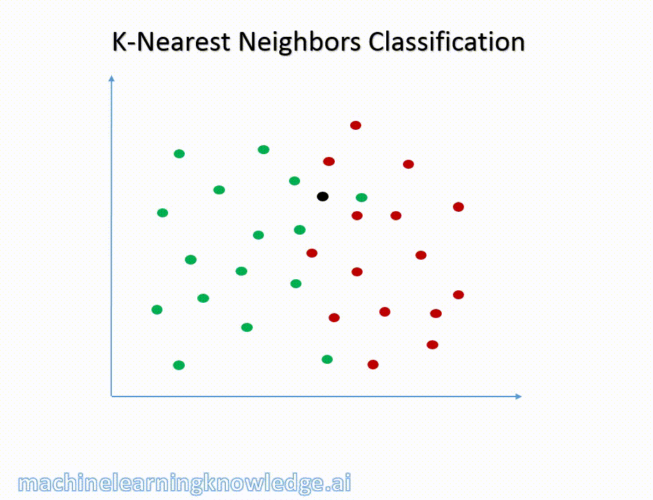

Linear Supervised Machine Learning with Scikit-Learn
Contents
import numpy as np
import matplotlib.pyplot as plt
import pandas as pd
from matplotlib.colors import ListedColormap
from sklearn import datasets, neighbors
from sklearn.datasets import load_breast_cancer
from sklearn.model_selection import cross_val_score, train_test_split
from sklearn.linear_model import LinearRegression, Ridge, Lasso
Linear Supervised Machine Learning with Scikit-Learn#
Datasets: List of multidimensional observations
Estimator Objects: Any object that learns from data. In estimators you can: - Set parameters
estimator = Estimator(param1=1, param2=2)- Fit some dataestimator.fit(data)- Predict the output from some dataestimator.predict(data)
Example: Classifying Irises#
The iris dataset is a classification task consisting in identifying 3 different types of irises (Setosa, Versicolour, and Virginica) from their petal and sepal length and width:
We will use this very simple dataset to explain ML concepts
# loads iris dataset
iris = datasets.load_iris()
# Sets the data to iris_x
iris_X = iris.data
# Sets the target to iris_y
iris_y = iris.target
# shows the unique targets
np.unique(iris_y)
array([0, 1, 2])
K-Nearest Neighbor Classifier#
One of the most simple classifiers
Finds a predefined number of training samples (defined by the user) to a new point for classification

Can use any distance metric but most commonly Euclidean distance
# sets the number of nearest neighbors
n_neighbors = 15
# import the iris data
iris = datasets.load_iris()
# we only take the first two features.
# slicing by using a two-dim dataset
X = iris.data[:, :2]
y = iris.target
h = .02 # step size in the mesh
# Create color maps
cmap_light = ListedColormap(['#FFAAAA', '#AAFFAA', '#AAAAFF'])
cmap_bold = ListedColormap(['#FF0000', '#00FF00', '#0000FF'])
for weights in ['uniform', 'distance']:
# we create an instance of Neighbors Classifier and fit the data.
clf = neighbors.KNeighborsClassifier(n_neighbors, weights=weights)
clf.fit(X, y)
# Plot the decision boundary. For that, we will assign a color to each
# point in the mesh [x_min, x_max]x[y_min, y_max].
x_min, x_max = X[:, 0].min() - 1, X[:, 0].max() + 1
y_min, y_max = X[:, 1].min() - 1, X[:, 1].max() + 1
xx, yy = np.meshgrid(np.arange(x_min, x_max, h),
np.arange(y_min, y_max, h))
Z = clf.predict(np.c_[xx.ravel(), yy.ravel()])
# Put the result into a color plot
Z = Z.reshape(xx.shape)
plt.figure()
plt.pcolormesh(xx, yy, Z, cmap=cmap_light)
# Plot also the training points
plt.scatter(X[:, 0], X[:, 1], c=y, cmap=cmap_bold,
edgecolor='k', s=20)
plt.xlim(xx.min(), xx.max())
plt.ylim(yy.min(), yy.max())
plt.title("3-Class classification (k = %i, weights = '%s')"
% (n_neighbors, weights))
plt.show()
‘uniform’ : uniform weights. All points in each neighborhood are weighted equally.
‘distance’ : weight points by the inverse of their distance. In this case, closer neighbors of a query point will have a greater influence than neighbors who are further away.
Curse of Dimensionality#
As the dimensionality of a dataset grows it becomes sparse
For an estimator to be reasonable you need the distance between points to be less than some value d which depends on the problem
The amount of data needed (to be statistically significant) grows exponentially as the dimensionality increases
Excluding one dimension in the classification#
n_neighbors = 15
# import some data to play with
iris = datasets.load_iris()
# we only take the first two features.
# slicing by using a two-dim dataset
X = iris.data[:, :2]
y = iris.target
h = .02 # step size in the mesh
# Create color maps
cmap_light = ListedColormap(['#FFAAAA', '#AAFFAA', '#AAAAFF'])
cmap_bold = ListedColormap(['#FF0000', '#00FF00', '#0000FF'])
for weights in ['uniform', 'distance']:
# we create an instance of Neighbors Classifier and fit the data.
clf = neighbors.KNeighborsClassifier(n_neighbors, weights=weights)
clf.fit(X, y)
# Plot the decision boundary. For that, we will assign a color to each
# point in the mesh [x_min, x_max]x[y_min, y_max].
x_min, x_max = X[:, 0].min() - 1, X[:, 0].max() + 1
y_min, y_max = X[:, 1].min() - 1, X[:, 1].max() + 1
xx, yy = np.meshgrid(np.arange(x_min, x_max, h),
np.arange(y_min, y_max, h))
Z = clf.predict(np.c_[xx.ravel(), yy.ravel()])
# Put the result into a color plot
Z = Z.reshape(xx.shape)
plt.figure()
plt.pcolormesh(xx, yy, Z, cmap=cmap_light)
# Plot also the training points
plt.scatter(X[:, 0], X[:, 1], c=y, cmap=cmap_bold,
edgecolor='k', s=20)
plt.xlim(xx.min(), xx.max())
plt.ylim(yy.min(), yy.max())
plt.title("3-Class classification (k = %i, weights = '%s')"
% (n_neighbors, weights))
plt.show()

In 1D this requires \(n \propto 1/d\) however when you have p features this becomes \(n \propto 1/d^{p}\)
It is common to use ML to reduce the dimensionality of the problem
This could be using dimensionality reduction techniques
Could be using featurization methods
Using Machine Learning to Reduce the Curse of Dimensionality#
Linear Regression#
\(y = x\beta + \epsilon\)
Example Dataset#
The diabetes dataset consists of 10 physiological variables (age, sex, weight, blood pressure) measured on 442 patients, and an indication of disease progression after one year:
Want to predict disease progression
diabetes = datasets.load_diabetes()
diabetes_X_train = diabetes.data[:-20]
diabetes_X_test = diabetes.data[-20:]
diabetes_y_train = diabetes.target[:-20]
diabetes_y_test = diabetes.target[-20:]
regr = LinearRegression()
regr.fit(diabetes_X_train, diabetes_y_train)
print(regr.coef_)
# The mean square error
np.mean((regr.predict(diabetes_X_test) - diabetes_y_test)**2)
# Explained variance score: 1 is perfect prediction
# and 0 means that there is no linear relationship
# between X and y.
print(regr.score(diabetes_X_test, diabetes_y_test) )
[ 3.06094248e-01 -2.37635570e+02 5.10538048e+02 3.27729878e+02
-8.14111926e+02 4.92799595e+02 1.02841240e+02 1.84603496e+02
7.43509388e+02 7.60966464e+01]
0.585085427447195
A linear model does not work that well in this high-dimensional problem
Shrinkage#
Problem: if there are only a few data points per dimension, noise in the observation induces a large variance
# makes example data
X = np.c_[ .5, 1].T
y = [.5, 1]
# makes test data
test = np.c_[ 0, 2].T
# makes an object for a linear fit
regr = LinearRegression()
# makes the figure
plt.figure()
# fixes the seed
np.random.seed(0)
# adds variance and does the fitting for samples with variance
for _ in range(6):
this_X = .1 * np.random.normal(size=(2, 1)) + X
regr.fit(this_X, y)
plt.plot(test, regr.predict(test))
plt.scatter(this_X, y, s=3)
The way to deal with variance is to reduce the model complexity by adding statistical damaging mechanisms called regularization
A Step back with simple mathematics
We are fitting some data to a linear model
\(\hat{y} = w[0] \times X[0] + w[1] \times X[1] + ... + w[n] \times X[n] + b\)
When we fit the cost function is the mean squared error:
\(\sum_{i=1}^{M}(y_i-\hat{y_i})^2 = \sum_{i=1}^{M}(y_i - \sum_{j=0}^{p}w_j\times x_{ij})^2\)
M - number of instances or samples
p - number of features
If you do a test/train split you get an idea if the model is overfitting
We want to add constraints on the model which reduces the complexity (regularization)
Ridge Regression#
The cost function is altered by adding a penalty equivalent to the square of the magnitude of the coefficients
This drives the coefficients to be small
The Cost Function for Ridge Regression#
\(\sum_{i=1}^{M}(y_i-\hat{y_i})^2 = \sum_{i=1}^{M}(y_i - \sum_{j=0}^{p}w_j\times x_{ij})^2 + \lambda\sum_{j=0}^{p}w_{j}^{2}\)
shrinks the coefficients and multicollinearity
\(\lambda\) sets the magnitude of this effect
As \(\lambda \rightarrow 0\) becomes a linear fit
Example: California Housing Data#
Step 1: Loads data#
california=datasets.fetch_california_housing()
california_df=pd.DataFrame(california.data,columns=california.feature_names)
print(california_df.info())
<class 'pandas.core.frame.DataFrame'>
RangeIndex: 20640 entries, 0 to 20639
Data columns (total 8 columns):
# Column Non-Null Count Dtype
--- ------ -------------- -----
0 MedInc 20640 non-null float64
1 HouseAge 20640 non-null float64
2 AveRooms 20640 non-null float64
3 AveBedrms 20640 non-null float64
4 Population 20640 non-null float64
5 AveOccup 20640 non-null float64
6 Latitude 20640 non-null float64
7 Longitude 20640 non-null float64
dtypes: float64(8)
memory usage: 1.3 MB
None
Step 2: Adds the target into the pandas dataframe#
# add another column that contains the house prices which in scikit learn datasets are considered as target
california_df['Price']=california.target
print(california_df.head(3))
MedInc HouseAge AveRooms AveBedrms Population AveOccup Latitude \
0 8.3252 41.0 6.984127 1.023810 322.0 2.555556 37.88
1 8.3014 21.0 6.238137 0.971880 2401.0 2.109842 37.86
2 7.2574 52.0 8.288136 1.073446 496.0 2.802260 37.85
Longitude Price
0 -122.23 4.526
1 -122.22 3.585
2 -122.24 3.521
Step 3: Saves a new df without the price#
newX=california_df.drop('Price',axis=1)
print(newX[0:3]) # check
newY=california_df['Price']
MedInc HouseAge AveRooms AveBedrms Population AveOccup Latitude \
0 8.3252 41.0 6.984127 1.023810 322.0 2.555556 37.88
1 8.3014 21.0 6.238137 0.971880 2401.0 2.109842 37.86
2 7.2574 52.0 8.288136 1.073446 496.0 2.802260 37.85
Longitude
0 -122.23
1 -122.22
2 -122.24
Step 4: Test Train Split#
X_train,X_test,y_train,y_test=train_test_split(newX,newY,test_size=0.3,random_state=3)
print(f'Test size: {len(X_test)} , {len(y_test)}')
print(f'Train size: {len(X_train)} , {len(y_train)}')
Test size: 6192 , 6192
Train size: 14448 , 14448
Step 5: Builds the Linear Regression Object#
lr = LinearRegression()
lr.fit(X_train, y_train)
LinearRegression()In a Jupyter environment, please rerun this cell to show the HTML representation or trust the notebook.
On GitHub, the HTML representation is unable to render, please try loading this page with nbviewer.org.
LinearRegression()
Step 6: Builds the Ridge Regression Object#
rr = Ridge(alpha=.01) # higher the alpha value, more restriction on the coefficients; low alpha > more generalization, coefficients are barely
# restricted and in this case linear and ridge regression resembles
rr.fit(X_train, y_train)
rr100 = Ridge(alpha=1000) # comparison with alpha value
rr100.fit(X_train, y_train)
Ridge(alpha=1000)In a Jupyter environment, please rerun this cell to show the HTML representation or trust the notebook.
On GitHub, the HTML representation is unable to render, please try loading this page with nbviewer.org.
Ridge(alpha=1000)
Step 7: Evaluation of the Ridge Regression Model#
train_score=lr.score(X_train, y_train)
test_score=lr.score(X_test, y_test)
Ridge_train_score = rr.score(X_train,y_train)
Ridge_test_score = rr.score(X_test, y_test)
Ridge_train_score100 = rr100.score(X_train,y_train)
Ridge_test_score100 = rr100.score(X_test, y_test)
print("linear regression train score:", train_score)
print("linear regression test score:", test_score)
print("ridge regression train score low alpha:", Ridge_train_score)
print("ridge regression test score low alpha:", Ridge_test_score)
print("ridge regression train score high alpha:", Ridge_train_score100)
print("ridge regression test score high alpha:", Ridge_test_score100)
linear regression train score: 0.6096935309447493
linear regression test score: 0.5910064719662456
ridge regression train score low alpha: 0.6096935309343097
ridge regression test score low alpha: 0.5910073521875898
ridge regression train score high alpha: 0.598628779921399
ridge regression test score high alpha: 0.5997728167392642
Step 8: Visualizing the results#
plt.plot(rr.coef_,alpha=0.7,linestyle='none',marker='*',markersize=5,color='red',label=r'Ridge; $\alpha = 0.01$',zorder=7) # zorder for ordering the markers
plt.plot(rr100.coef_,alpha=0.5,linestyle='none',marker='d',markersize=6,color='blue',label=r'Ridge; $\alpha = 1000$') # alpha here is for transparency
plt.plot(lr.coef_,alpha=0.4,linestyle='none',marker='o',markersize=7,color='green',label='Linear Regression')
plt.xlabel('Coefficient Index',fontsize=16)
plt.ylabel('Coefficient Magnitude',fontsize=16)
plt.legend(fontsize=13,loc=4)
plt.show()
What does this mean?
X-axis we have the coefficients for the 8 features
When \(\alpha\) is low looks like a linear fit
When \(\alpha\) is high all of the coefficients shrink
The model is less responsive to small variances in a particular parameter
Better at generalizing
The difference between the training and validation accuracy with a high \(\alpha\) is less, this means there is less overfitting.
Note Ridge regression is regularly called L2
Lasso Regression#
Cost Function for Lasso Regression#
\(\sum_{i=1}^{M}(y_i-\hat{y_i})^2 = \sum_{i=1}^{M}(y_i - \sum_{j=0}^{p}w_j\times x_{ij})^2 + \lambda\sum_{j=0}^{p}|w_{j}|\)
Just like Ridge regression:
\(\lambda\) sets the magnitude of this effect
As \(\lambda \rightarrow 0\) becomes a linear fit
Lasso or L1 regularization drives the weights to 0:
Can be used to impose sparsity (independence) in model \(\rightarrow\) used in feature selection
Lasso regression helps reduced overfitting
Example: Breast Cancer Data#
Step 1: Loads the data and makes test train split#
cancer = load_breast_cancer()
print(cancer.keys())
cancer_df = pd.DataFrame(cancer.data, columns=cancer.feature_names)
print(cancer_df.head(3))
X = cancer.data
Y = cancer.target
X_train,X_test,y_train,y_test=train_test_split(X,Y, test_size=0.3, random_state=31)
dict_keys(['data', 'target', 'frame', 'target_names', 'DESCR', 'feature_names', 'filename', 'data_module'])
mean radius mean texture mean perimeter mean area mean smoothness \
0 17.99 10.38 122.8 1001.0 0.11840
1 20.57 17.77 132.9 1326.0 0.08474
2 19.69 21.25 130.0 1203.0 0.10960
mean compactness mean concavity mean concave points mean symmetry \
0 0.27760 0.3001 0.14710 0.2419
1 0.07864 0.0869 0.07017 0.1812
2 0.15990 0.1974 0.12790 0.2069
mean fractal dimension ... worst radius worst texture worst perimeter \
0 0.07871 ... 25.38 17.33 184.6
1 0.05667 ... 24.99 23.41 158.8
2 0.05999 ... 23.57 25.53 152.5
worst area worst smoothness worst compactness worst concavity \
0 2019.0 0.1622 0.6656 0.7119
1 1956.0 0.1238 0.1866 0.2416
2 1709.0 0.1444 0.4245 0.4504
worst concave points worst symmetry worst fractal dimension
0 0.2654 0.4601 0.11890
1 0.1860 0.2750 0.08902
2 0.2430 0.3613 0.08758
[3 rows x 30 columns]
Step 2: Defines the model and prints results#
# alpha = 1
# instantiates the lasso model
lasso = Lasso()
# fits the training data
lasso.fit(X_train,y_train)
# computes the training score
train_score=lasso.score(X_train,y_train)
# computes the test score
test_score=lasso.score(X_test,y_test)
# counts the number of features used by the model
coeff_used = np.sum(lasso.coef_!=0)
# prints the results
print("training score:", train_score)
print("test score: ", test_score)
print ("number of features used: ", coeff_used)
# alpha = 0.01
# instantiates the lasso model
lasso001 = Lasso(alpha=0.01, max_iter=int(10e5))
# fits the training data
lasso001.fit(X_train,y_train)
# computes the score
train_score001=lasso001.score(X_train,y_train)
test_score001=lasso001.score(X_test,y_test)
# counts the number of features used by the model
coeff_used001 = np.sum(lasso001.coef_!=0)
# prints the results
print( "training score for alpha=0.01:", train_score001 )
print( "test score for alpha =0.01: ", test_score001)
print( "number of features used: for alpha =0.01:", coeff_used001)
# alpha = 0.0001
lasso00001 = Lasso(alpha=0.0001, max_iter=int(10e5))
lasso00001.fit(X_train,y_train)
train_score00001=lasso00001.score(X_train,y_train)
test_score00001=lasso00001.score(X_test,y_test)
coeff_used00001 = np.sum(lasso00001.coef_!=0)
print( "training score for alpha=0.0001:", train_score00001 )
print( "test score for alpha =0.0001: ", test_score00001)
print( "number of features used: for alpha =0.0001:", coeff_used00001)
# linear regression
lr = LinearRegression()
lr.fit(X_train,y_train)
lr_train_score=lr.score(X_train,y_train)
lr_test_score=lr.score(X_test,y_test)
print( "LR training score:", lr_train_score )
print( "LR test score: ", lr_test_score)
training score: 0.5600974529893081
test score: 0.5832244618818156
number of features used: 4
training score for alpha=0.01: 0.7037865778498829
test score for alpha =0.01: 0.6641831577726227
number of features used: for alpha =0.01: 10
training score for alpha=0.0001: 0.7754092006936698
test score for alpha =0.0001: 0.7318608210757911
number of features used: for alpha =0.0001: 22
LR training score: 0.7842206194055069
LR test score: 0.7329325010888672
f = plt.figure(figsize=(10,6))
plt.subplot(1,2,1)
plt.plot(lasso.coef_,alpha=0.7,linestyle='none',marker='*',markersize=5,color='red',label=r'Lasso; $\alpha = 1$',zorder=7) # alpha here is for transparency
plt.plot(lasso001.coef_,alpha=0.5,linestyle='none',marker='d',markersize=6,color='blue',label=r'Lasso; $\alpha = 0.01$') # alpha here is for transparency
plt.xlabel('Coefficient Index',fontsize=16)
plt.ylabel('Coefficient Magnitude',fontsize=16)
plt.legend(fontsize=13,loc=4)
plt.subplot(1,2,2)
plt.plot(lasso.coef_,alpha=0.7,linestyle='none',marker='*',markersize=5,color='red',label=r'Lasso; $\alpha = 1$',zorder=7) # alpha here is for transparency
plt.plot(lasso001.coef_,alpha=0.5,linestyle='none',marker='d',markersize=6,color='blue',label=r'Lasso; $\alpha = 0.01$') # alpha here is for transparency
plt.plot(lasso00001.coef_,alpha=0.8,linestyle='none',marker='v',markersize=6,color='black',label=r'Lasso; $\alpha = 0.00001$') # alpha here is for transparency
plt.plot(lr.coef_,alpha=0.7,linestyle='none',marker='o',markersize=5,color='green',label='Linear Regression',zorder=2)
plt.xlabel('Coefficient Index',fontsize=16)
plt.ylabel('Coefficient Magnitude',fontsize=16)
plt.legend(fontsize=13,loc=4)
plt.tight_layout()
plt.show()
Step 3: Explaining the Results#
For the default case \(\alpha = 1\), 4 out of 30 features have non-zero coefficients
Questions: is this model overfitting or underfitting?
Both training and test results are low \(\rightarrow\) model is underfitting
\(\alpha = 0.01\), 10 out of 30 features have non-zero coefficients, and test and training scores increase
as \(\alpha\) decreases further resemble linear regression
Visual Explanation of Lasso and Ridge Regression#